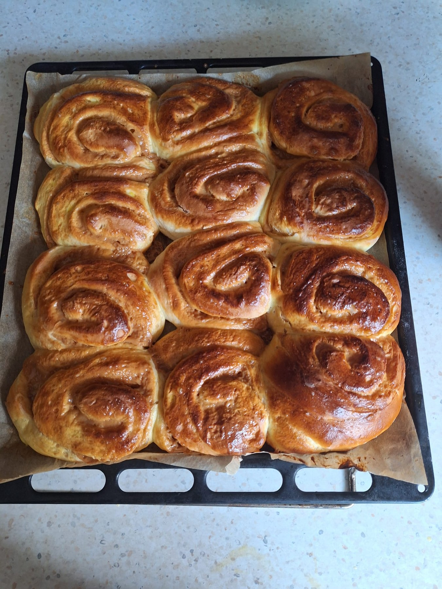
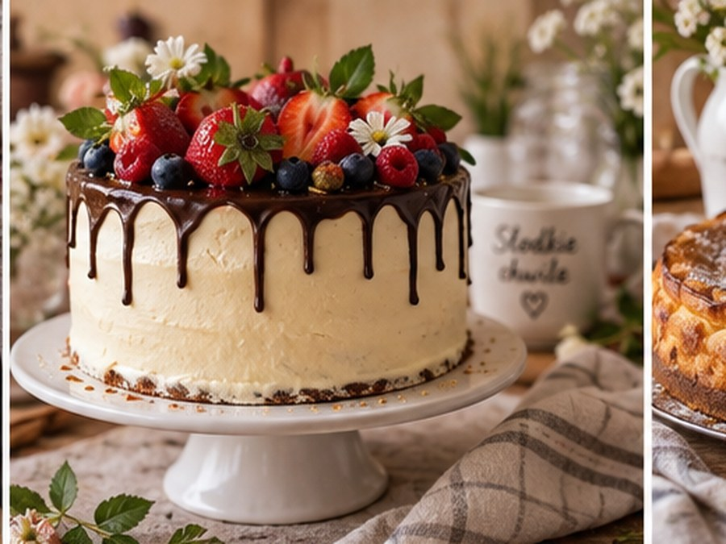
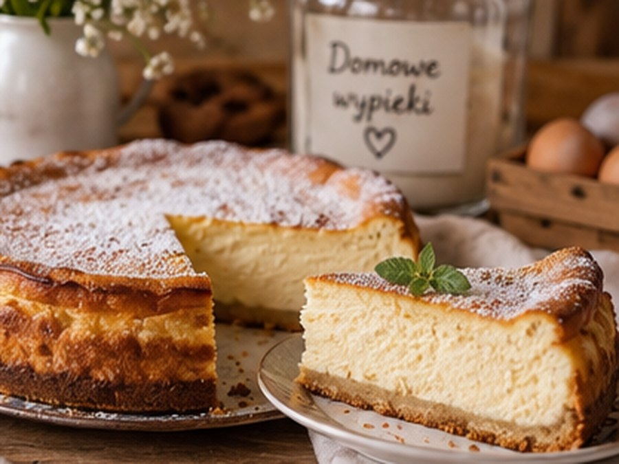
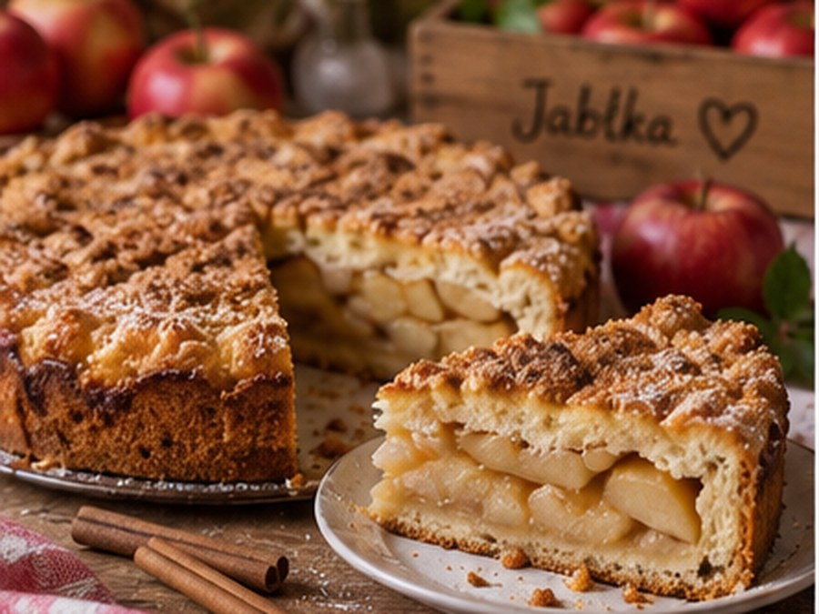
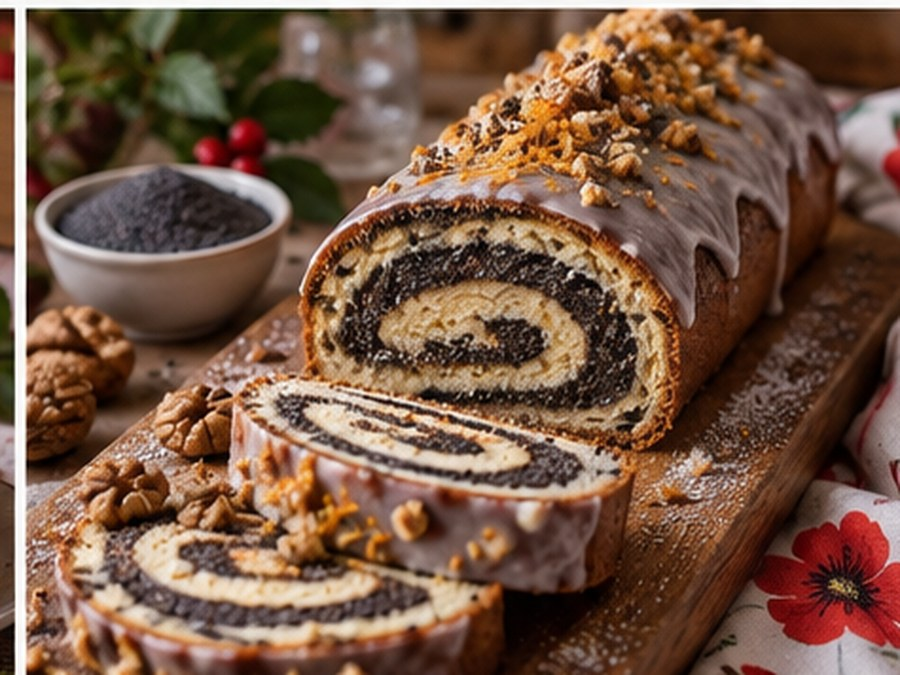
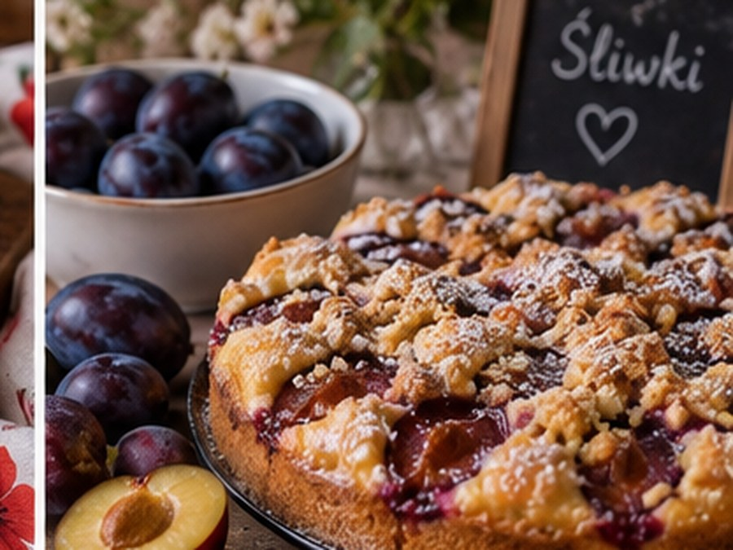
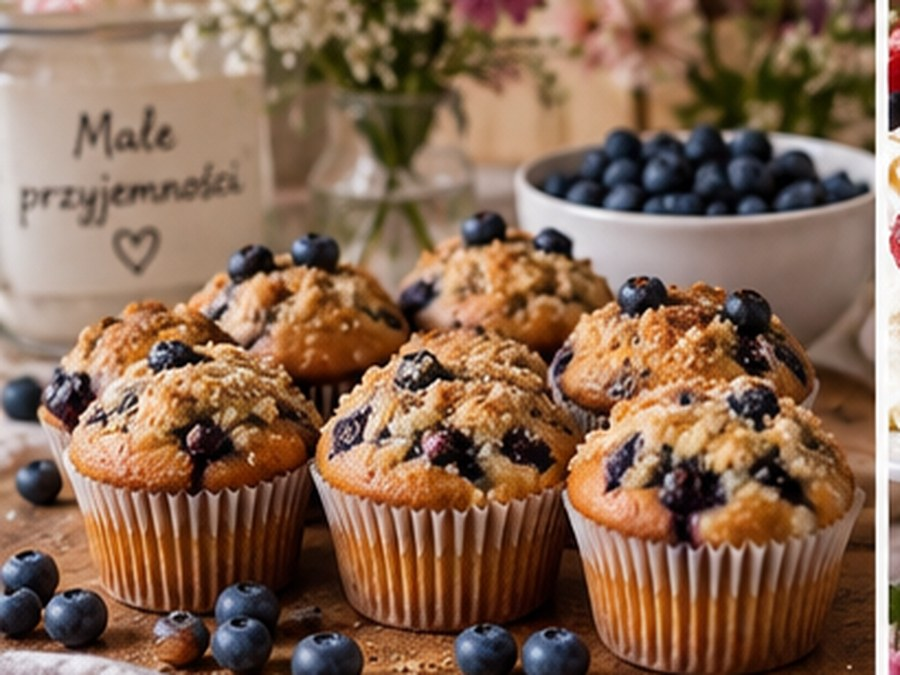
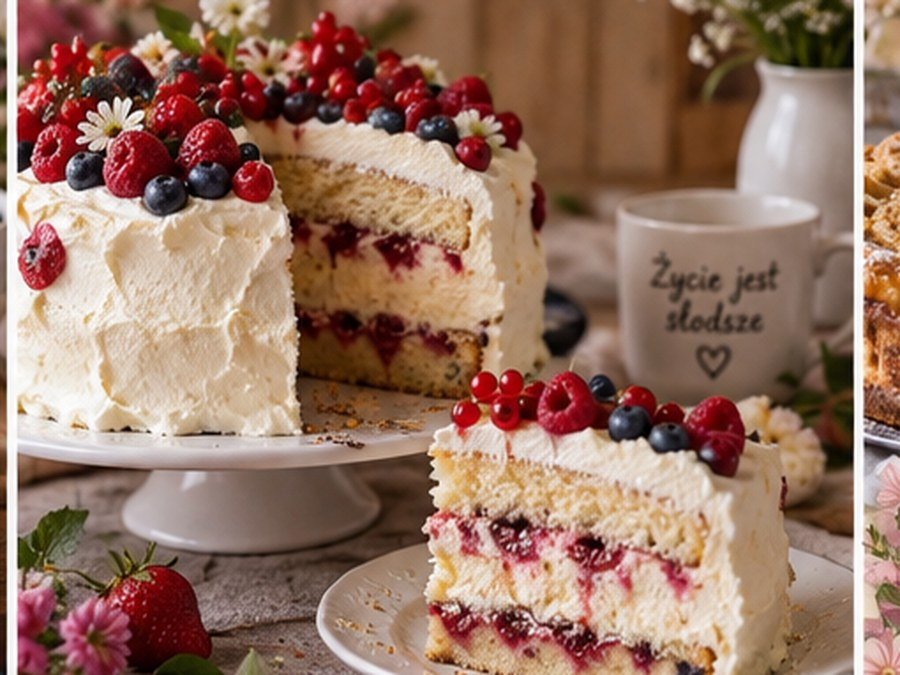
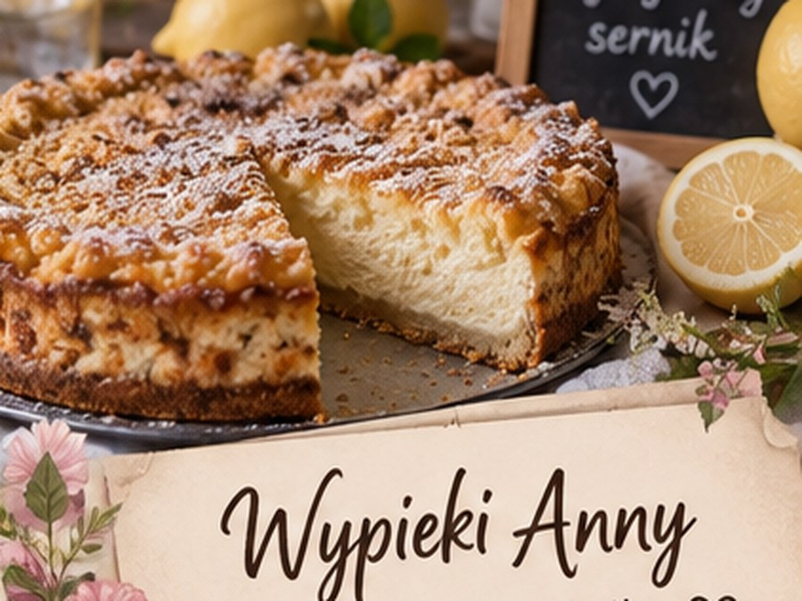
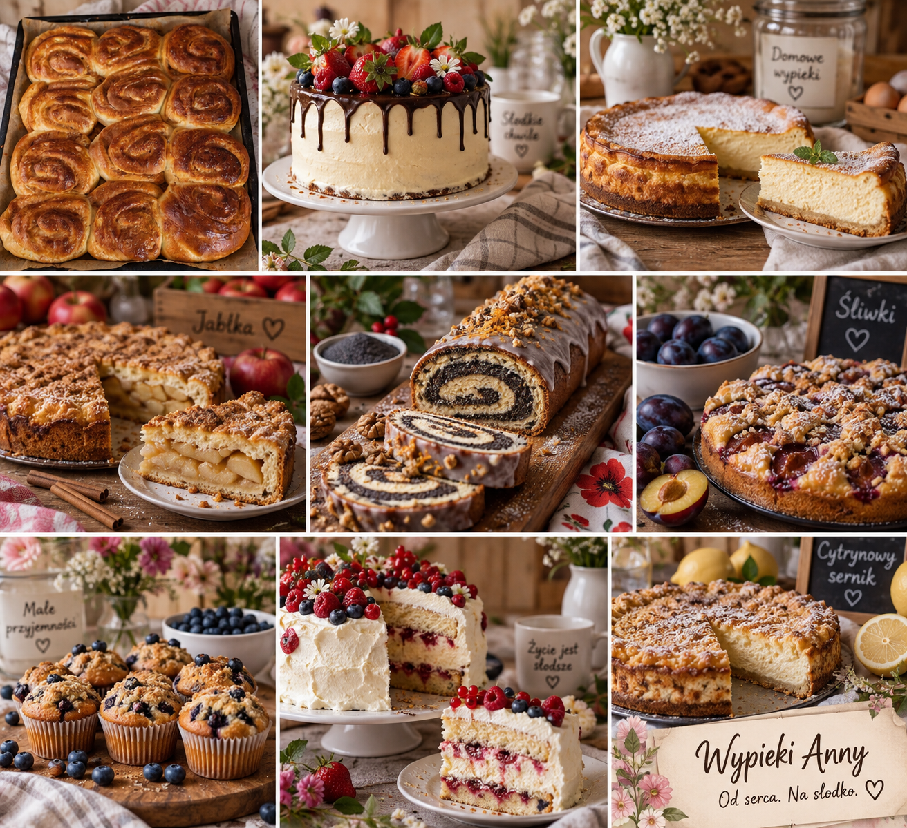

🎂
Torty
Urodzinowe, rodzinne i okazjonalne — kremowe, owocowe, czekoladowe.
Ciasta, torty, drożdżówki i małe słodkości przygotowywane z sercem — na rodzinny stół, spotkanie z przyjaciółmi i najważniejsze okazje.
Każdy wypiek powstaje w małych partiach i może być dopasowany do okazji.

Klasyczne smaki, sezonowe owoce i wypieki na specjalne okazje. Menu może zmieniać się razem z porą roku.
Urodzinowe, rodzinne i okazjonalne — kremowe, owocowe, czekoladowe.
Serniki, jabłeczniki, makowce, ciasta ze śliwką i wiele innych domowych klasyków.
Puszyste, miękkie i pachnące. Z serem, owocami, kruszonką lub cynamonem.
Muffinki, babeczki i porcje idealne na spotkania, przyjęcia i słodkie stoły.
Inspiracje pokazujące klimat i rodzaj słodkości, które mogą pojawić się w ofercie Wypieków Anny.









Wypieki Anny to miejsce stworzone z miłości do domowych smaków. Liczy się nie tylko wygląd, ale przede wszystkim świeżość, aromat i ten moment, kiedy pierwszy kawałek znika ze stołu.
Podaj rodzaj wypieku, okazję, liczbę osób i preferowany termin.
Smak, dekorację, wielkość i dostępność składników dopasujemy wspólnie.
Gotowy wypiek czeka świeży i przygotowany na Twoją słodką chwilę.
Napisz kilka słów o tym, czego potrzebujesz. To wersja demonstracyjna — dane kontaktowe można później podmienić na telefon, Instagram, Facebook lub e-mail Ani.